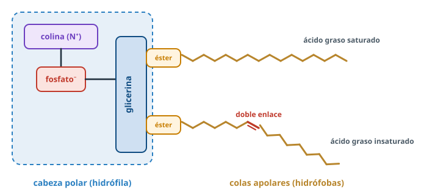
Lípidos
Muy distintos entre sí, pero todos huyen del agua. Gracias a eso almacenan energía, construyen membranas e impermeabilizan.
Usa ← → o el espacio para avanzar · F para pantalla completa
Directrices PAU 2026-27 · A.3.2¿Qué tenemos que saber?
Ácidos grasos
Saturados e insaturados, anfipáticos, punto de fusión. Esterificación, hidrólisis, saponificación.Saponificables
Triacilglicéridos (reserva), fosfolípidos (membranas), ceras, esfingolípidos.Insaponificables
Esteroides (membranas, hormonas, vitamina D) y terpenos (vitaminas A, E, K; pigmentos).Concepto¿Qué es un lípido?
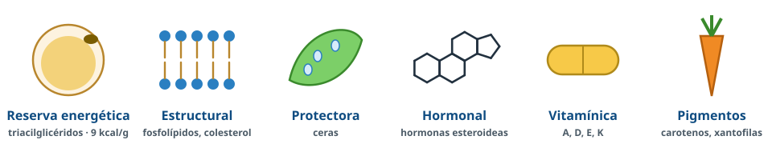
Clasificación¿Tiene ácidos grasos?
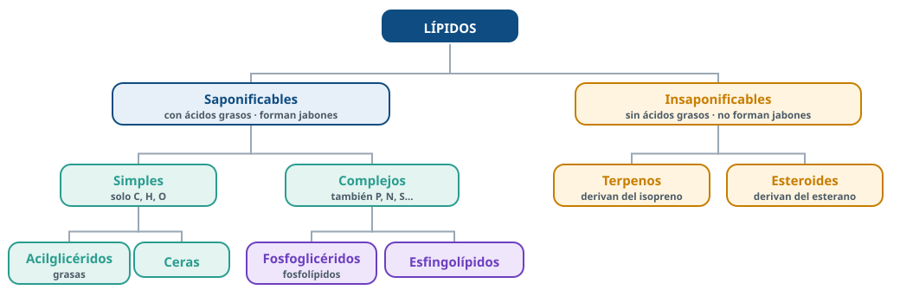
Saponificables: con ácidos grasos, son ésteres, forman jabones. Insaponificables: no.
Ácidos grasosUna cola larga y una cabeza ácida
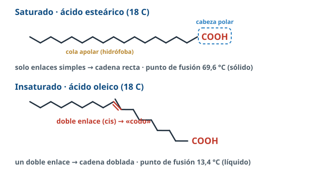
CH₃–(CH₂)ₙ–COOH, nº par de C.
Saturados: solo enlaces simples, rectos.
Insaturados: dobles enlaces (cis) → codos.
Anfipáticos: –COOH polar + cadena apolar.
Ácidos grasos¿Sólido o líquido?
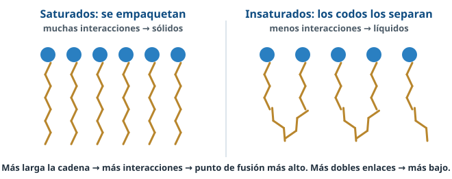
ReaccionesEsterificación e hidrólisis
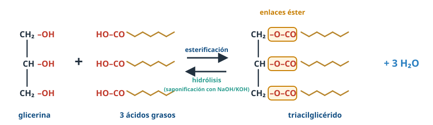
Esterificación
–COOH + –OH → enlace éster + H₂O.Saponificación
Con NaOH o KOH → glicerina + jabones (sales de ácidos grasos).ReaccionesJabón contra la grasa
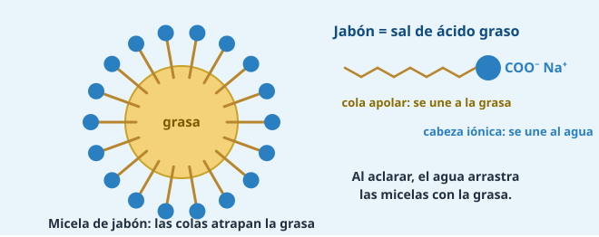
SaponificablesCuatro lípidos, cuatro diseños
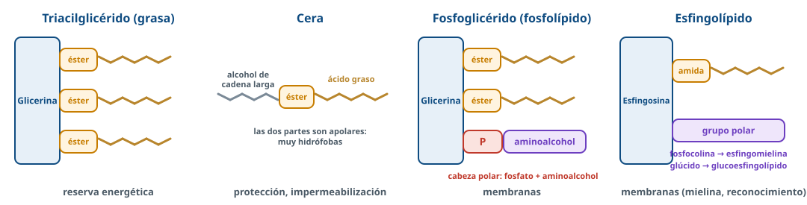
AcilglicéridosTriacilglicéridos: la reserva de energía
Estructura
Glicerina + 3 ácidos grasos unidos por enlaces éster. Apolares.Sebos (saturados, animales) · aceites (insaturados, vegetales)
Funciones
- Reserva energética: 9 kcal/g
- Aislante térmico
- Amortiguación mecánica, flotabilidad
Lípidos de membranaEl fosfolípido
- Glicerina + 2 ácidos grasos + fosfato + aminoalcohol.
- Anfipático: cabeza polar, colas apolares.
- Forma bicapas: colas dentro, cabezas hacia el agua.
- Función estructural: membranas.
Lípidos de membranaDe la molécula a la membrana

Fuerzas
Interacciones hidrofóbicas (colas) y electrostáticas (cabezas).Esfingolípidos
Ceramida (esfingosina + AG) + grupo polar: esfingomielinas (mielina) y glucoesfingolípidos (reconocimiento celular).CerasImpermeables por los dos lados
Estructura
Éster de un ácido graso de cadena larga + un monoalcohol de cadena larga. Muy hidrófobas.Función
Protectora e impermeabilizante: hojas y frutos, plumas, pelo, piel, exoesqueleto de insectos, panales.InsaponificablesTerpenos: hechos de isopreno
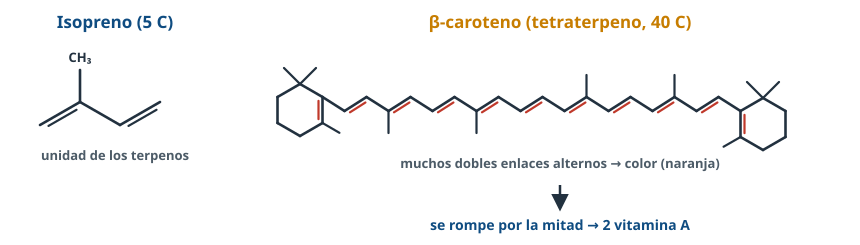
| Tipo | Ejemplos |
|---|---|
| Monoterpenos | Esencias: mentol, limoneno |
| Diterpenos | Fitol (clorofila), vitamina A |
| Tetraterpenos | Carotenos (naranja) y xantofilas (amarillo): pigmentos fotosintéticos |
InsaponificablesEsteroides: cuatro anillos
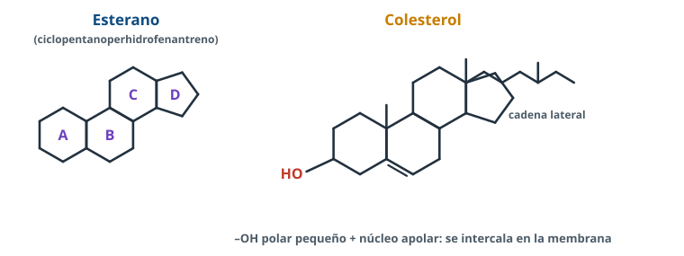
- Colesterol: membranas animales; precursor de hormonas, sales biliares y vitamina D.
- Sales biliares: emulsionan las grasas.
- Vitamina D: en la piel con luz UV; metabolismo del calcio.
- Hormonas: sexuales y suprarrenales.
Problemas PAU¿Sabrías identificarlo?
Laboratorio · Nuevo 26-27Sudán: los lípidos se tiñen
Sudán III o IV → tiñe los lípidos de rojo-anaranjado.
Agua + aceite + Sudán: se colorea la capa de aceite (arriba, menos densa); el agua no.
Solo hay que interpretar el resultado.
Salud · A.4.2Grasas: ¿cuáles y cuántas?
Déficit
Faltan ácidos grasos esenciales (linoleico, linolénico): alteraciones neurológicas e inmunitarias.Exceso
Grasas saturadas y colesterol: obesidad, aterosclerosis, enfermedad cardiovascular.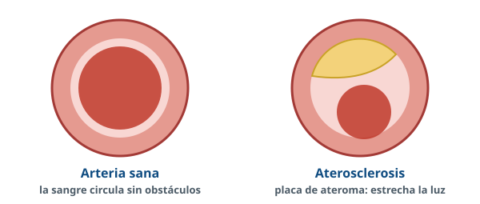
Dieta mediterránea: aceite de oliva, frutos secos, pescado azul.
Antes del examenErrores que restan puntos
- Clasificar lípidos sin decir el criterio (presencia de ácidos grasos).
- Decir que los triacilglicéridos son anfipáticos: son apolares.
- Confundir saponificación (con base fuerte → jabón) con esterificación.
- Decir que un esteroide es hidrolizable: no tiene enlaces éster.
- Olvidar el agua que se libera al formarse el enlace éster.
- Pensar que más dobles enlaces sube el punto de fusión: lo baja.
Huir del agua
también es vivir
Repasa el resumen, lee los apuntes completos con las preguntas PAU resueltas y entrénate en BioCelia → Entrenamiento.